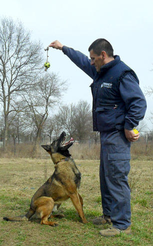

Breeder
Nikola Paulić
 I have been working with dogs since 1993. when I became canine officer guiding police dog "Medo". On the same year I have started training dogs for police purposes. I was a member of special forces "Alpha" where I worked intensively on dog training for military purposes, specifically for counter-terrorist operations. These drills where located in the harsh environment of Velebit mesa. In 2003. I became commanding officer of search dogs in Zagreb police headquarters. Kennels "Od Slunja" have been registered in 2003. I am mostly working with official dogs trained for military, police and security. I have also worked with dogs specialised on explosives and narcotics detection.
I have been working with dogs since 1993. when I became canine officer guiding police dog "Medo". On the same year I have started training dogs for police purposes. I was a member of special forces "Alpha" where I worked intensively on dog training for military purposes, specifically for counter-terrorist operations. These drills where located in the harsh environment of Velebit mesa. In 2003. I became commanding officer of search dogs in Zagreb police headquarters. Kennels "Od Slunja" have been registered in 2003. I am mostly working with official dogs trained for military, police and security. I have also worked with dogs specialised on explosives and narcotics detection.
After years of hard work I can claim myself an expert in the field of Belgian shepards and police dogs as well as household dogs. I also manage training courses for other dog breeds as well as preparing dogs for exhibits and shows. Amongs these activities I can also provide advice on choosing a breed or buying a specific dog.
Belgian Shepard
Malinois breed is mostly used as police/military dog, but it's also common as a household dog. If you are dynamic person then this is a perfect dog for you. It is is strong, agile, well muscled, alert, and full of life. Given his dynamic nature he needs a lot of movement and needs to stay active
Malinois have short, straight hair that feels hard to the touch. The hard topcoat and dense undercoat provide weather resistance for a dog that was bred to work outdoors in all conditions. The hair is slightly longer around the neck, forming a sort of mini-mane. It is rarely sick, eats little and has no problems with hips as most dogs have. Malinois expected life rate is around 15 years.
Malinois breed comes in many shades; brown, yellow, red and black. Basic characteristics are medium height, proportional build, elegant looks. His head light and nicely shaped while his nose is mostly dark. Malinois jaws are strong and his teeth are healthy white. Males are 24 to 26 inches tall at the shoulder and weigh 60 to 80 pounds. Females are 22 to 24 inches tall and weigh 40 to 60 pounds.
{kind=link}
{kind=link}
{kind=link}